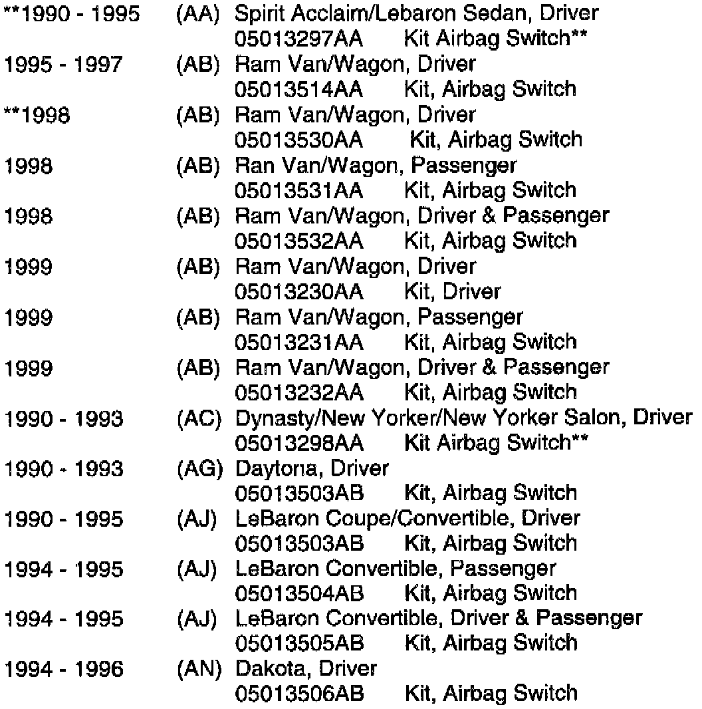
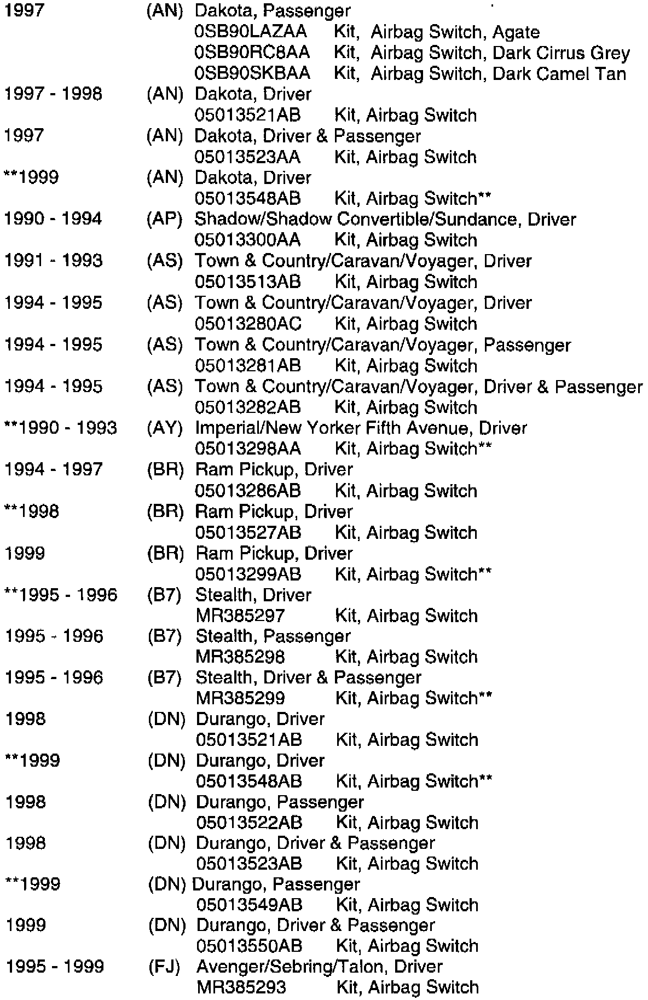
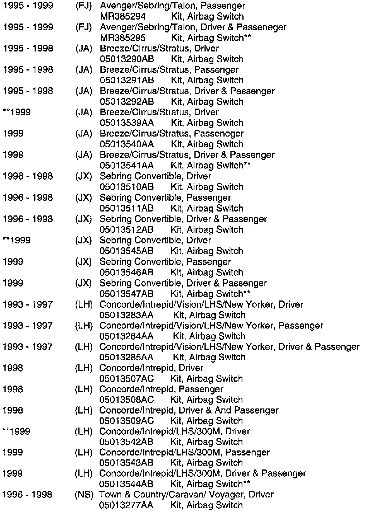
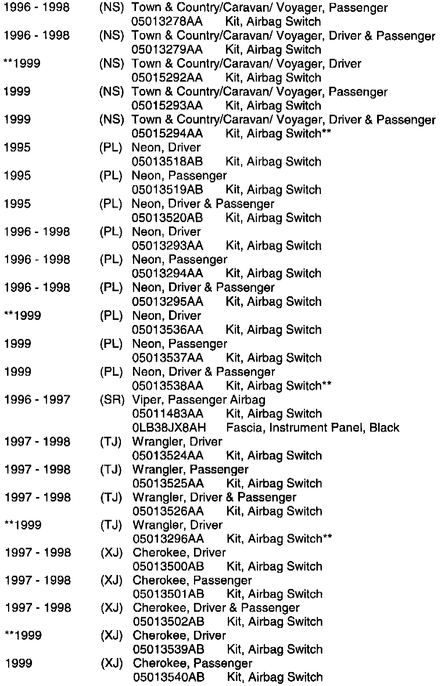
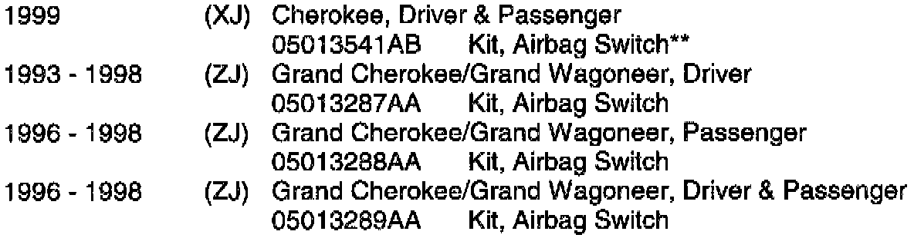
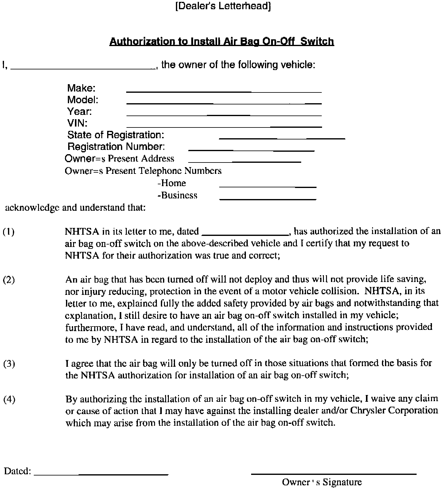

Air Bag System - ON-OFF Switch Availibility
NO: 08-17-98 Rev. CGROUP: Electrical
DATE: Dec. 30, 1998
SUBJECT:
Airbag On-Off
Switches
THIS REPAIR IS COMPATIBLE WITH DAIMLERCHRYSLER'S MOBILE SERVICE PROGRAM AND DOES NOT REQUIRE HOISTS OR OTHER FULL SERVICE FACILITY SPECIAL EQUIPMENT.
THIS BULLETIN SUPERSEDES TECHNICAL SERVICE BULLETIN 08-17-98 Rev. B DATED SEPTEMBER 18, 1998 WHICH SHOULD BE REMOVED FROM YOUR FILES. ADDITIONAL MODELS HAVE BEEN ADDED. ALL REVISIONS ARE HIGHLIGHTED WITH **ASTERISKS**.
MODELS:
**1990 - 1995 (AA) Spirit/Acclaim/Lebaron Sedan**
1995 - **1999** (AB) Ram Van/Wagon
**1990 - 1993 (AC) Dynasty/New Yorker/New Yorker Salon**
1990 - 1993 (AG) Daytona
1990 - 1995 (AJ) LeBaron Coupe/Convertible
1994 -**1999** (AN) Dakota
1990 - 1994 (AP) Shadow/Shadow Convertible/Sundance
1991 - 1995 (AS) Town & Country/Caravan/Voyager
**1990 - 1993 (AY) Imperial/New Yorker Fifth Avenue**
1994 - **1999** (BR) Ram Pickup
**1995 - 1996 (B7) Stealth**
1998 - **1999** (DN) Durango
**1995 - 1999 (FJ) Avenger/Sebring/Talon**
1995 - **1999** (JA) Breeze/Cirrus/Stratus
1996 - **1999** (JX) Sebring Convertible
1993 -**1999** (LH) Concorde/Intrepid/Vision/LHS/New Yorker/300M
1996 - **1999** (NS) Town & Country/Caravan/ Voyager
1995 - **1999** (PL) Neon
1996 - 1997 (SR) Viper
1997 - **1999** (TJ) Wrangler
1997 - **1999** (XJ) Cherokee
1993 - 1998 (ZJ) Grand Cherokee/Grand Wagoneer
NOTE:
THIS BULLETIN IS PROVIDED TO IDENTIFY THE PARTS AND PROCEDURES NECESSARY TO DEACTIVATE AIRBAGS AUTHORIZED BY NHTSA. AIRBAG DEACTIVATION IS A CUSTOMER PAY PROCEDURE, NOT COVERED UNDER THE PROVISIONS OF THE WARRANTY. THE COMPONENT PARTS ARE COVERED UNDER THE APPROPRIATE MOPAR PART WARRANTY.
DISCUSSION:
DaimlerChrysler Corporation is now offering airbag on-off switches for the selected vehicles listed above. Other applicable passenger vehicles will be announced as soon as the switches are available. The switches are packaged in a kit containing all necessary parts (except as indicated) and a detailed instruction sheet.
Under the National Highway Traffic Safety Administration's rule, consumers will be authorized for on-off switches by claiming they meet any of several criteria. Airbag on-off switches must not be installed without the vehicle owner presenting the NHTSA authorization letter. For more information concerning the authorization process and/or the authorization letter call NHTSA's Auto Safety Hotline at 1-800-424-9393.
We encourage you (dealer) to install these switches when the customer is interested in doing so and has the necessary NHTSA authorization.





PARTS REQUIRED:
NOTE:
SOME INSTRUCTION SHEETS FOR THE 1999 MODELS LIST ONLY 1998 MODELS ON THE COVER PAGE. THE 1998 KITS CAN BE USED ON ALL 1999 CARRY-OVER VEHICLES.
DEACTIVATION/DOCUMENTATION PROCEDURE:

1. Before you install any airbag on-off switch for owners of air bag equipped vehicles, the owner must present to you an "Authorization Form" from the U.S. Department of Transportation National Highway Traffic Safety Administration (NHTSA), certifying the specific vehicle by its vehicle identification number. The authorization applies only to the vehicle identified and not to other vehicles that the owner may have.
2. The owner must complete the "Authorization to Install Air Bag On-Off Switch Release Agreement Form" available on T.I.L. and printed on your dealership letterhead. Keep a copy for your records and make a copy for the vehicle owner.
3. Complete the NHTSA authorization form, and return it to NHTSA within seven days, making copies for the owner's and your records.
NOTE:
ALL DEALER OWNED USED VEHICLES SHOULD BE INSPECTED FOR PROPER AIRBAG OPERATION, i.e. NOT DEACTIVATED, PRIOR TO RESALE.
POLICY: Information Only